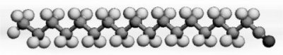
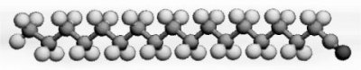
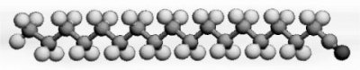
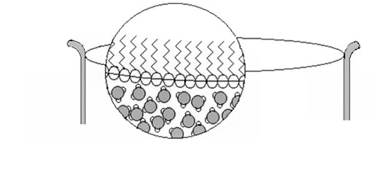
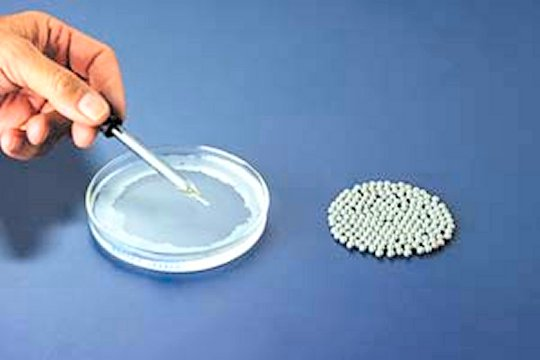
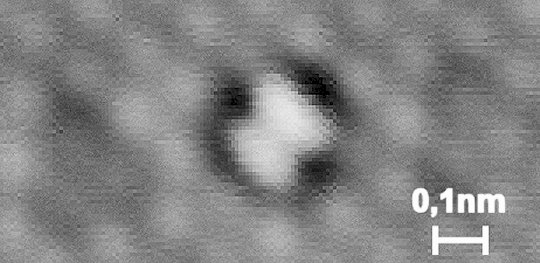
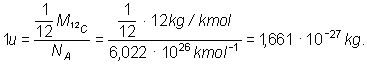

 a
 a
Elemente de termodinamică. |
Noţiuni termodinamice de bază |
Calităţile de spălare ale detergenţilor se datorează proprietăţilor speciale ale moleculelor acestora. Moleculele de detergent au un capăt polar, care se ataşează puternic la moleculele de apă . Celălalt capăt, nepolar, "evită" apa (figura 1-1).
 a
Turnând detergent diluat pe suprafaţa apei, moleculele de detergent se "acorează" cu partea polară în apă, aşezându-se una lângă alta, într-un strat monomolecular (figura 1-2).

Figura 1-2. Stratul monomolecular de detergent format la suprafaţa apei.
Grosimea stratului este astfel chiar lungimea unei molecule de detergent!
 Activitatea experimentală 1-1
Activitatea experimentală 1-1
Estimează dimensiunile tipice ale moleculelor de detergent. Lucrează în echipă.
Pasul 1. Diluaţi în apă 1 mL de detergent lichid, astfel încât gradul de diluţie să fie 1 la 1000 (concentraţie 0,1%). De exemplu, dacă eticheta unui sortiment de detergent lichid indică o proporţie de 25% a substanţelor numite tensioactive (aceştia sunt detergenţii!), fiecare mililitru din acest produs conţine doar 0,25 mL detergenţi veritabili (restul este cel mai probabil apă!).
Pasul 2. Turnaţi un strat de apă adânc de aproximativ 1 cm într-un vas larg de cel puţin 10 cm (un vas Petri sau chiar o farfurie de unică folosinţă). Presăraţi puţină pudră de cretă pe toată suprafaţa apei. Particulele de cretă vă vor semnala ce se va petrece la suprafaţa apei.
Pasul 3. Folosiţi o pipetă şi turnaţi în centrul vasului o singură picătură de detergent diluat. Observaţi ce se întâmplă! Picătura de detergent diluat se răspândeşte pe suprafaţa apei, împingând creta pe o frontieră aproape circulară (figura 1-3).

Figura 1-3. Picătura de detergent diluat se răspândeşte într-o pată aproape circulară, împingând
particulele de cretă.
Pasul 4. Măsuraţi cu o riglă diametrul petei pe care s-a răspândit detergentul diluat.
Pasul 5. Privind printr-o lupă, estimaţi cu rigla diametrul unei picături de detergent lichid înainte de a se desprinde din vârful pipetei.
Pasul 6. Cu ajutorul acestor date, calculaţi lungimea tipică a unei molecule de detergent!
Moleculele de detergent au dimensiunile tipice de 1 nm (o miliardime de metru!) Sunt de o mie de ori mai mici decât cele mai mici detalii pe care le poţi observa la microscopul optic!
 Provocarea 1-1
Provocarea 1-1
Câte molecule de detergent încap, aşezate una în prelungirea celeilalte, pe grosimea unei foi de hârtie?
Au fost realizate instrumente speciale care permit observarea individuală a moleculelor. Unul dintre acestea este microscopul cu tunelare, STM (Scanning Tunneling Microscope). Un vârf foarte subţire este "plimbat" la foarte mică distanţă de probă. Între probă şi vârf este aplicată o tensiune de câteva zecimi de volt. Printr-un efect special - numit efect tunel - apare un curent electric prin circuitul format de probă, vârf şi sursa de tensiune, chiar dacă vârful nu atinge proba! Intensitatea acestui curent depinde foarte puternic de distanţa dintre vârf şi probă.
Astfel, "plimbând" vârful la mică distanţă de probă, variaţiile curentului de tunelare sunt o indicaţie foarte precisă a "reliefului" probei. Cu ajutorul unui calculator, variaţiile de curent măsurate sunt transformate într-o imagine tridimensională (figura 1-4).

Figura 1-4. O moleculă de oxigen. Structura ca un fagure din fundal este un strat de atomi
de platină pe care molecula de oxigen este adsorbită.
 Dimensiunile tipice ale moleculelor sunt de ordinul nanometrului.
Dimensiunile tipice ale moleculelor sunt de ordinul nanometrului.Unele molecule sunt chiar mai mici: cea de oxigen are aproximativ 0,2 nm, aşa cum poţi vedea în figura 1-4.
Este dificilă precizarea dimensiunii exacte a unei molecule, neexistând o graniţă precisă a acesteia. Moleculele pot interacţiona apreciabil până la distanţe de câteva ori mai mari decât ceea ce considerăm a fi dimensiunile moleculelor.
Fiind atât de mici, într-o cantitate uzuală de substanţă există un număr enorm de atomi sau molecule.
Numim mol cantitatea de substanţă care conţine 6,022·1023 particule.
Când foloseşti molul, trebuie să precizezi natura particulelor: molecule, atomi sau particule elementare (electroni, protoni, neutroni).
Numim constanta lui Avogadro, notată NA, cantitatea 6,022·1023 mol-1.
Această constantă este numită, uneori, impropriu, numărul lui Avogadro. Un număr nu are unităţi de măsură (π este un număr!). Constanta lui Avogadro are unităţi de măsură, astfel că:
NA=6,022·1026 kmol-1,
cantitatea transformându-se în funcţie de unităţile de măsură folosite.
A fost măsurată cu mare precizie masa unui mol pentru diferite substanţe.
Numim masă molară a unei substanţe masa unui mol din acea substanţă.
Tabelul 1-1 prezintă masele molare ale unor substanţe uzuale.
Tabelul 1-1. Mase molare
| Substanţa | Masa molară (kg/kmol) |
| Hidrogen (atomic): H | 1,0 |
| Hidrogen (molecular): H2 | 2,0 |
| Heliu: He | 4,0 |
| Carbon (izotopul 12C) | exact 12 |
| Azot (atomic): N | 14,0 |
| Azot (molecular): N2 | 28,0 |
| Oxigen (atomic): O | 16,0 |
| Oxigen (molecular): O2 | 32,0 |
| Aer | 28,9 |
Provocarea 1-2
Oricare măsurătoare este afectată de erori (mai mari sau mai mici). Cum este oare posibil ca masa molară a izotopului de carbon 12 să fie exact 12 kg/kmol?
Valoarea exactă se datorează unei convenţii - am ales valoarea 12 pentru izotopul de carbon 12!
Numim unitate atomică de masă, notată u, 1/12 din masa unui atom al izotopului de
carbon 12.
Provocarea 1-3
Exprimă în kilograme unitatea atomică de masă.
Un kmol de 12C are masa exact 12 kg. Numărul de atomi de carbon dintr-un kmol este dat de constanta lui Avogadro, astfel că:

Numim masă moleculară masa unei molecule, iar masă atomică masa unui atom.
Provocarea 1-4
Cât este masa moleculară a hidrogenului? Dar masa atomică a oxigenului?
Uneori este comod să exprimăm masele moleculelor şi atomilor ca raport faţă de unitatea atomică de masă.
Numim masă moleculară relativă raportul dintre masa moleculară şi unitatea atomică de masă.
Similar,
Numim masă atomică relativă raportul dintre masa atomică şi unitatea atomică de masă.
Fiind un raport de mase, masele moleculare sau atomice relative se exprimă ca numere pure (ca în sistemul periodic al elementelor).
Ai acum o imagine mai clară asupra caracteristicilor atomilor şi moleculelor: dimensiuni de ordinul nanometrului şi mase de ordinul unităţii atomice de masă.